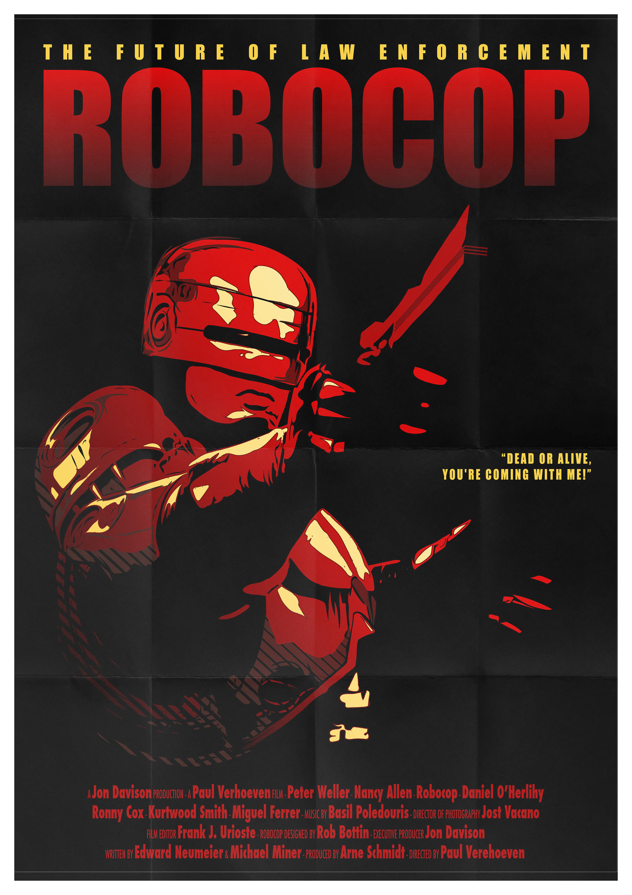
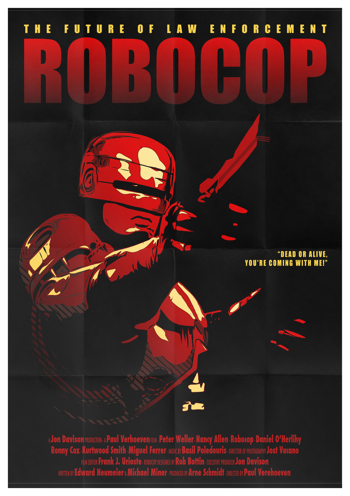
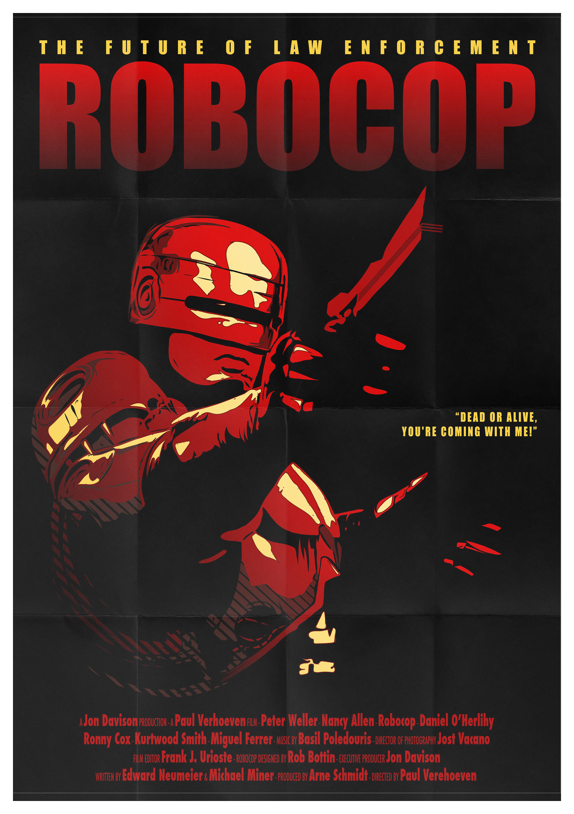
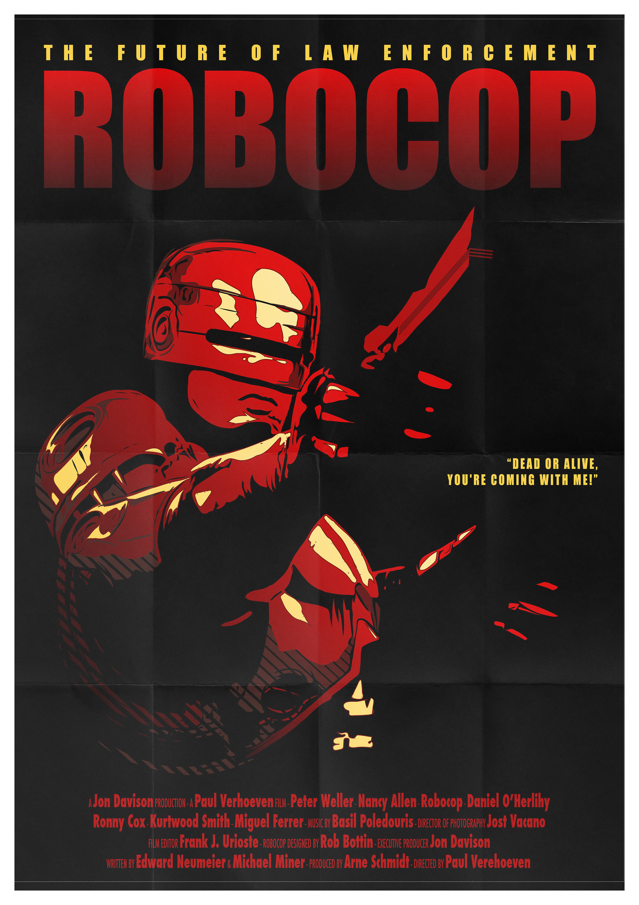
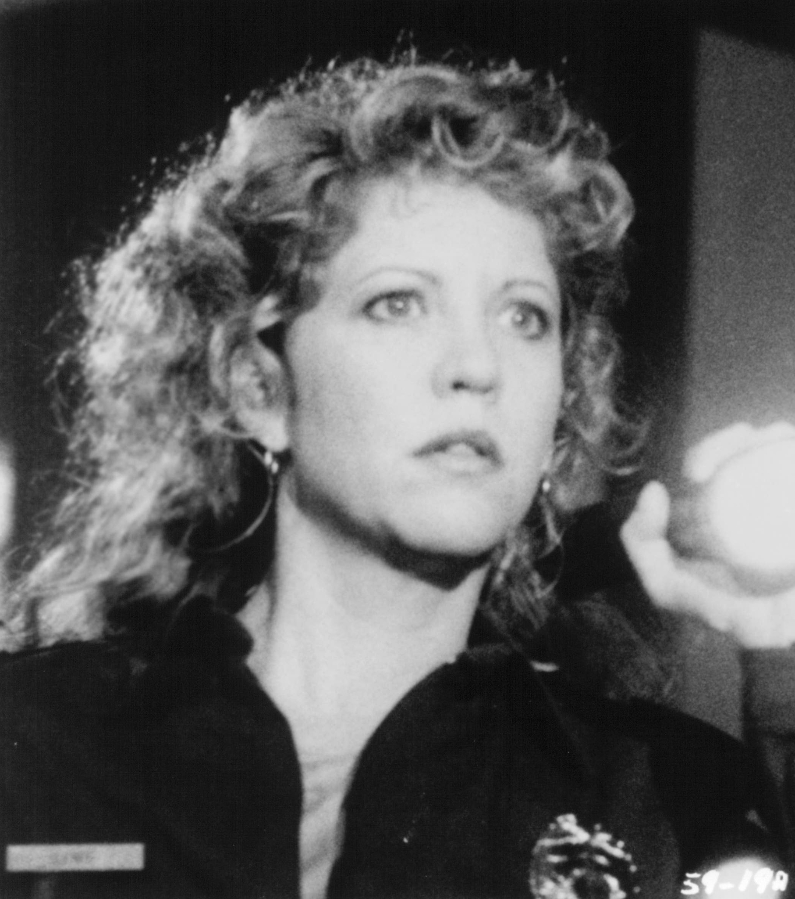

 

In an overly commercialized future, desensitized to violence, the Detroit Police Department, now corporate-run by OCP (Omni Consumer Products), finds itself overwhelmed, near collapse, and ready to strike. Chief among criminals at large is Clarence Boddicker, who alone, amidst his psychopathic gang, is responsible for thirty-one police deaths. While OCP's president awaits the full collapse of Detroit so he can built his Delta City dream project over its remains in six months, two officials at OCP look toward high-tech solutions to the crime problem, with an old-school official developing a robot (Enforcement Droid 209) while an ambitious upstart develops a cyborg (RoboCop, fashioned from the remains of fallen police officer Alex Murphy). While ED-209 is a flop, RoboCop is a marvel, but violence escalates when an official at OCP, directing Boddicker's actions, needs the effective cyborg destroyed.
"Most thriller and special-effects movies come right off the assembly line...RoboCop is a thriller with a difference." - Roger Ebert
| Peter Weller | Officer Alex J. Murphy / RoboCop | |
|  | Nancy Allen | Officer Anne Lewis |
| Kurtwood Smith | Clarence J. Boddicker | |
| Ronny Cox | Dick Jones |